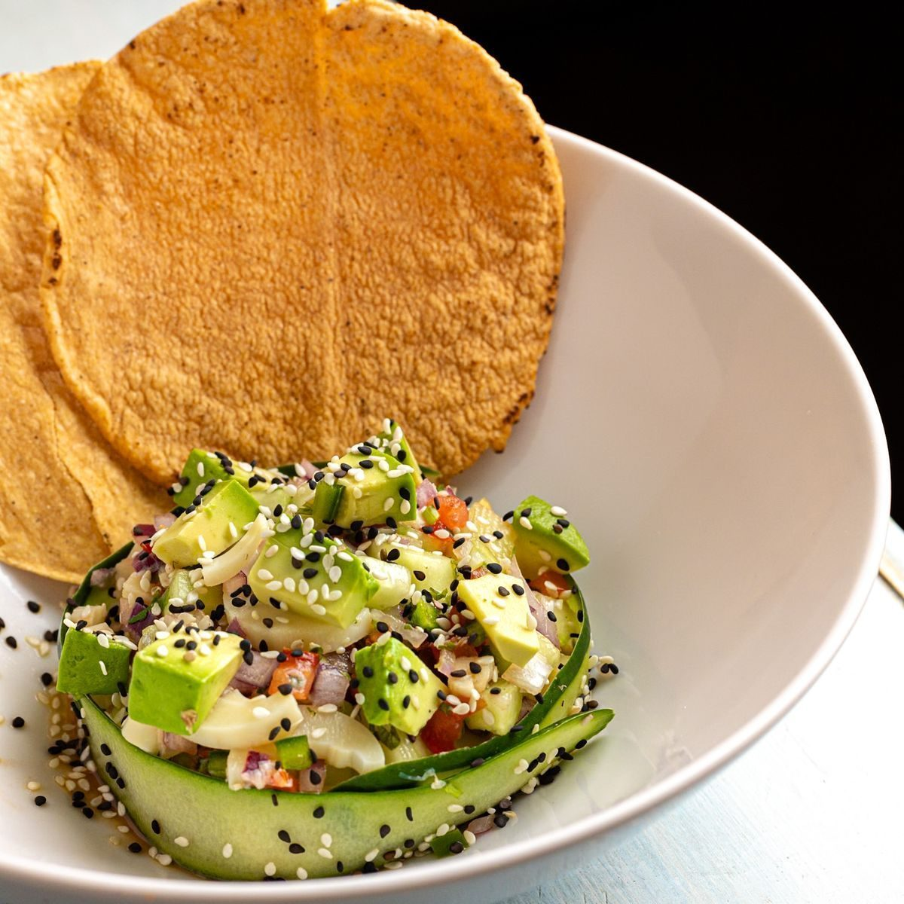

Waco, Texas
Tacos, burritos, and menudo for breakfast and lunch
A Mexican breakfast and lunch taqueria in Waco serving tacos, burritos, gordita de barbacoa, menudo, and chorizo, potato, cheese, and bacon breakfast items. Cash only.
Waco, Texas
A Mexican breakfast and lunch taqueria in Waco serving tacos, burritos, gordita de barbacoa, menudo, and chorizo, potato, cheese, and bacon breakfast items. Cash only.
Pablo's Taqueria is a Mexican breakfast and lunch taqueria in Waco. Its menu includes tacos, burritos, gordita de barbacoa, menudo, and chorizo, potato, cheese, and bacon breakfast items. Multiple reviews note the taqueria is cash only.


2624 N 18th St, Waco, TX
Sunday 6:30 AM to 2:30 PM; Monday, Tuesday, Thursday, and Friday 6:30 AM to 2:00 PM; Saturday 6:30 AM to 2:30 PM; Wednesday not listed